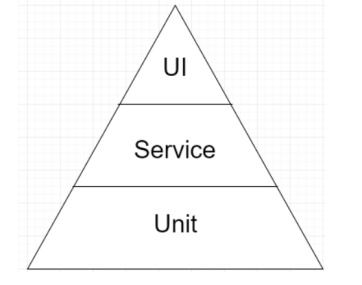
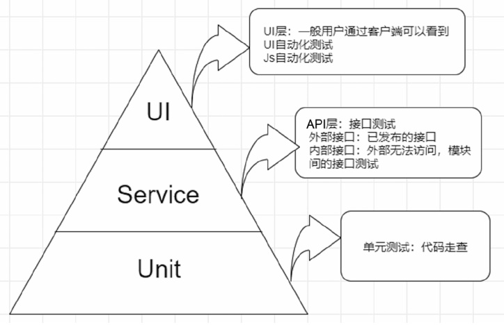

自动化测试快速入门教程（30分钟）
这是一套自动化测试的简明入门教程，它将告诉你自动化测试的方方面面，让你有一个整体的认识。
本教程分为 10 小节：
本文总计 1W 字，阅读大概需要 30 分钟，请保持耐心。
从广义角度讲，通过使用各种测试工具（第三方手段）来替代或辅助手工测试的形式都可以称为自动化测试，比如利用我们熟知的 JMeter 进行批量数据构造或接口的压力测试等，都可以看作自动化测试。
从狭义角度讲，自动化测试是指通过工具录制或编写脚本模拟手工测试的过程，并通过回放或运行脚本来执行测试，从而代替人工检查被测软件或系统的功能是否符合预期要求。
然而实际并非如此，二者并不是互斥的，而是相互依赖的。通过手工测试稳定的功能，可以采用自动化测试，机械、重复的测试场景也可以采用自动化测试，这样效率反而更高。因此，在不同的阶段使用不同的测试方法才最有效。
手工测试具有以下特点：
自动化测试具有以下特点：
下面我们就来介绍在自动化测试过程中常见的一些误区。
很多读者认为使用工具录制、回放脚本就是自动化测试了。而事实上，自动化测试并没有那么简单。录制操作步骤是否正确以及生成的脚本是否稳定、能否重复使用等，都会直接影响整个测试结果。因此，自动化测试并非只是单纯地使用工具录制、回放脚本。
自动化测试主要用于大批量的回归测试，可以发现一些偶发性 Bug，从而节省更多测试时间，使得测试人员有精力来学习新的测试方法，以便找出更多、更深层次的新 Bug。
下面简单介绍一些测试开发工程师的硬性要求。
总之，个人理解就是全栈工程师了。
市场对好的测试开发工程师的需求很大，有兴趣的读者可以在“智联招聘”或者“前程无忧”等招聘网站上搜索该职位。测试开发工程师可以说是很多测试工程师比较成功的转型职位，而不是会一点自动化测试就是测试开发工程师。
当然，也不能说你会了自动化测试，以后就不用学习业务知识了，重点还是要看自动化测试框架能否在公司真正落地。
对于公司项目而言，如果产品三天一小改，五天一大改，版本迭代速度比脚本开发速度还快，那么自动化测试就只能是说说而已了。所以自动化测试是一种辅助测试的方式，最重要的是一切要以做好功能测试为前提。
其中，UI 代表页面级系统测试，Service 代表模块间的接口测试，Unit 代表单元测试。金字塔越高，表示需要投入的精力和工作量越大。
分层自动化测试思想主张从 UI 层到 Unit 层实现多层的自动化测试体系，即全面地对系统进行不同层次的自动化测试，如图2所示。
通常单元测试需要借助单元测试框架来开展，例如：
一般该环节由开发人员自己来完成。
Code Review 即代码评审或代码走查，目的是查找软件系统潜在的缺陷，保证软件产品质量及提高开发编码的能力。
有很多 Code Review 相关工具，在此就不一一列举了。作者使用 Java 语言进行编码测试，所以推荐采用比较流行的 Jenkins+GitLab+SonarQube 进行自动化测试和代码质量检测。
当然，对于外部接口，我们可以通过对应的测试工具进行调用和测试，比如 JMeter、Postman、SoupUI、LoadRunner 等。
另外，如果只关注该层的自动化测试，就很难从本质上保证产品的质量。如果妄图实现全面的 UI 层的自动化测试，那么更是一种劳民伤财的做法，投入了大量人力和时间，最终获得的收益往往不容乐观。
既然这么劳民伤财，我们不如放弃 UI 层，只做单元测试与接口测试不就好了吗？
答案肯定是不行，因为无论任何产品，最终呈现给用户的都是 UI 层，所以才需要大量的测试人员在 UI 层进行功能测试。因此，我们有必要通过自动化的方式来帮助测试人员做部分机械、重复的工作。
作者建议以手工测试与自动化测试相结合的形式来开展测试工作，从而把更多的时间和精力放在更有意义的事情上，比如新技术调研、学习等。
在 UI 自动化测试中最怕的是页面变化，变化的直接结果就是导致测试脚本运行失败，所以我们需要不断地对自动化脚本进行调整和维护。如何降低脚本失败率及维护成本是自动化测试人员面临的一项巨大挑战。
那么自动化测试流程是怎样的呢？下面来详细介绍。
原因在于，如果在脚本开发过程中遇到技术难题，开发人员不懂这门语言，就会陷入没人可问的窘况。
笔者曾学了一个月 Python（因为 Python 一直很火），刚开始做自动化测试时，遇到报错、技术难题，不知道怎么解决，咨询开发人员，开发人员也不懂，结果导致脚本开发进度受到影响，后来开始自学 Java，在遇到技术难题时再次询问开发人员，很容易就解决了，所以建议在选择语言上要慎重。
假设必须有两个资源。第一个资源是你写代码的计算机。如果你的计算机写代码特别卡，运行 IDE 速度如蜗牛一般，每次 IDE 编译、运行都要等上几分钟，就会影响工作效率，所以写代码的计算机不能太将就。
第二个资源是服务器，对于这个资源，要视公司的具体情况开展工作。也许集成服务器特别卡，第二天你收到的测试报告脚本批量报错，但是这些报错脚本在本地没问题，偏偏在集成服务器上回归测试出问题。
这时我们就要到集成服务器一看究竟，若集成服务器本身打开网页就很困难，那么还要坚持用它做回归测试吗？答案是否定的，所以有一个好的集成服务器做自动化测试对测试结果至关重要。
以 Windows 系统为例，为大家推荐的资源及配置如表1所示。
以上配置仅供参考，还需结合公司的具体情况进行调整。
编写完成后，需要对自动化测试方案进行评审，达成一致。如未达成一致，就需要对方案进行调整和修改，然后再次评审。
该阶段可能是多人配合或者单人开发，需要完成持久层（数据交互）、控制层（业务逻辑处理）、显示层（测试报告展示）、DEMO 演示脚本编码，并输出自动化测试框架说明文档，即需要编写自动化测试框架介绍 PPT，主要内容有预期目标、自动化框架的设计、主要使用技术、工程结构展示、测试脚本编写、测试报告展示等。
这时，我们需要组织一次会议，一般发送邮件通知领导、测试组同事及相关人员。结合在上个环节写的 PPT 来说明这一阶段我们做了哪些事情，包括完成进度、工作中的不足以及改进建议等。
演示结束后，参会人员可能会对框架提出一些建议。收集的建议放到框架优化里，优化时间可根据项目情况进行排期。
以上便是从无到有的一个自动化测试流程，如果公司已有成熟的自动化测试框架，那么按照已有的自动化流程执行即可。以上流程仅供参考，不是绝对的，具体还应视公司的情况来做调整。
下面我们一起来学习如何编写自动化测试用例。
很多公司基于自身测试工作的需求，又研发了适合本公司使用的自动化测试工具。目前自动化测试领域中，测试工具可谓百花齐放。
测试工具按其功能特性不同，可划分为功能测试工具、性能测试工具和测试管理工具等。
下面列举了适用于不同方面的自动化测试工具：
本文从自主、开源和商业三个方面分别介绍自动化测试工具。
目前，阿里巴巴、华为、百度和腾讯等大家所熟知的公司，均有自主研发的测试工具。
一般情况下，自主研发的测试工具更倾向于满足公司的业务需求，往往都有很强的针对性。自主研发的测试工具都留有接口，具有自主性，容易与本公司使用的其他管理工具衔接，具有很高的灵活性。
同时，自主研发的测试工具可以根据不同的项目定制不同的交互界面，大大增强了其易用性。
① License 费用：
如果公司测试工具的使用数量并不是很大，仅仅是少部分人使用（或并发数很少），这种情况下无法体现开源工具的优势。测试工具的大量并发运行，购买商业测试工具的 License 费用是很可观的。
② 灵活性：
开源测试工具一般都提供了源代码及开发接口，从而大大提高了使用者对测试工具的二次开发能力，这不仅有利于测试项目与测试工具的结合，而且也给开源测试工具的不断壮大注入了新鲜的血液。
在测试工作中，使用开源测试工具确实能给企业带来收益，即便仅仅使用开源测试管理工具搭建公司内部的测试管理平台也能从中获益。
而且随着时间的推移，众多的开发者对工具的不断完善与维护，其必将具有更好的前景。
同商业测试工具相比，开源测试工具并非没有缺点，它在用户交互性、可靠性及易用性方面做得不太理想。因此，如果要在测试项目组中引入开源测试工具，这对测试工程师来讲，无论是对其专业知识还是解决问题的能力，都有一定的要求。
常用的开源测试工具如下：
同时也应该看到，商业测试工具同样具有其他软件工具类似的特性，例如其大部分功能或高级功能对于一般用户来说很少使用到，这就是人们经常提及的 80/20 原理（即测试工具 20% 的功能经常被应用，而 80% 的功能很少被使用）。
测试工具的工作原理基本相同。对测试部门来讲，既然决定了采用商业测试工具，那么接下来面临的是需要选择一款适合测试工作的测试工具。
需要注意的是，在选择测试工具时，应优先考虑商业测试工具本身的功能，验证其是否满足测试项目组的需求，如测试团队的技术沉淀、被测对象的类型（B/S 或 C/S）及开发语言的支持情况等。
优秀的商业测试工具应具备如下特点：
下面列举几款商业测试工具：
建议从以下几个方面进行考虑：
先确认所测试的产品是桌面程序（C/S）还是 Web 应用（B/S）：
如果被测产品是 B/S 结构，那么强烈推荐 Selenium 测试工具。
为什么不是UFT呢？因为 Selenium 对 B/S 应用支持很好，更重要的一点是它支持多语言的开发。目前在 B/S 自动化测试领域中，Selenium 占有的市场份额最大。
如果测试的系统是 B/S 架构，需要从如下几个维度考虑：
越来越多的团队使用 Pyhon，因为 Python 很好用，它在编程语言排行榜上一直处于上升的趋势，所以笔者推荐 Python+ Selenium 的结合。
因此在选择自动化测试工具时，应选择一款对元素（或对象）抓取及识别支持较好的工具。
购买测试工具时除了考虑费用外，还需要考虑到后续的技术支持费用，以及额外购买并发 Lisence 的费用。因此，应该总体考虑，不要仅仅考虑购买工具所花的费用。
此外，Selenium 也成为其他开源自动化测试工具的核心框架，如 Katalon Studio、Watir、Protractor 和 Robot Framework。
Selenium 支持多种系统环境（Windows、mac OS 和 Linux）和浏览器（Chrome、Firefox 和 IE）。它的脚本可以用多种编程语言编写，如 Java、Python、C＃、PHP、Ruby 和 Perl。
测试人员可以灵活地使用 Selenium 或借助 Selenium IDE 实现录制与回访，也可以通过开发语言编写复杂的高级测试脚本来满足各种复杂场景的需要，但要有扎实的语言基础。
地址：http://www.seleniumhq.org
类型：开源
Katalon Studio 基于 Selenium 和 Appium 框架构建，并且集成了这些框架的优点。
Katalon Studio 测试工具支持不同级别的测试技能。非程序员可以轻松地启动自动化测试项目（例如使用 Object Spy 来记录测试脚本），而程序员和高级自动化测试人员可以节省构建新库和维护脚本的时间。
Katalon Studio 可以集成到 CI 流程中，并且可以与 QA 流程中的流行工具配合使用，包括 JIRA、Jenkins 和 Git 等。该工具还提供了一个很棒的功能，称为 Katalon Analytics，即通过仪表板为用户提供测试执行报告的全面视图，包括指标、图表和图形。
地址：https://www.katalon.com
类型：免费
该工具具有先进的基于图像的对象识别功能、可重复使用的测试组件和自动化文档。
UFT 使用 Visual Basic Scripting Edition 来注册测试进程和对象控制，并且与 ALM 一起协同工作。该工具通过与 Jenkins 等 CI 工具集成来支持 CI。
地址：https://software.microfocus.com/fr-ca/software/uft
类型：商业
Watir 支持跨浏览器测试，包括 Firefox、Opera 和 IE 等；它还支持数据驱动测试，并与 RSpec、Cucumber、Test 和 Unit 等 BBD 工具集成。
地址：http://watir.com
类型：开源
RFT 具有称为故事版测试的独特功能，其中，用户对 AUT 的操作通过应用程序屏幕截图以故事版格式记录和可视化。
RFT 的另一个有趣的特性是它与 IBM Jazz 应用程序生命周期管理系统（如 IBM Rational Team Concert 和 Rational Quality Manager）进行了集成。
地址：https://www.ibm.com
类型：商业
TestComplete 支持各种脚本语言，如 JavaScript、VBScript、Python 和 C ++ Script。
与 Katalon Studio 一样，测试人员可以使用 TestComplete 执行关键字驱动和数据驱动的测试。该工具还提供了易于使用的录制和播放功能。
与 UTF 一样，TestComplete 的 GUI 对象识别功能可以自动检测和更新 UI 对象，这有助于减少 AUT 更改时维护测试脚本的工作量。
此外，TestComplete 还在 CI 过程中与 Jenkins 集成。
地址：https://smartbear.com
类型：商业
TestPlant EggPlant 测试工具支持 Web、移动等各种平台。
地址：https://www.testplant.com
类型：商业
Tricentis Tosca 可以帮助用户优化测试资产的可重用性。与许多其他自动化测试工具一样，它支持广泛的技术和应用程序，如 Web、移动应用和 API。
Tricentis Tosca 还具有集成管理、风险分析和分布式执行的功能。
地址：https://www.tricentis.com
类型：商业
无代码测试创建也是该工具的一个非常有用的功能，其允许新的自动化测试人员学习并将测试应用于他们的项目中。
Ranorex 测试工具支持以 Selenium 集成，从而进行 Web 应用程序测试。测试人员可以使用 Selenium 跨平台和浏览器分布式执行测试。
地址：https://www.ranorex.com
类型：商业
Robot Framework 为不同的自动化测试需求提供框架，并且通过使用 Python 和 Java 实现其他测试库，可以进一步扩展其测试功能。Selenium WebDriver 是 Robot Frame-work 中常用的外部库。
测试工程师利用 Robot Framework 作为自动化框架，不仅可以进行 Web 测试，还可以用于 Android 和 iOS 测试。
对于熟悉关键字驱动测试的测试人员，可以轻松学习 Robot Framework。目前也有部分团队在使用 Robot Framework。
地址：http://www.robotframework.org
类型：开源
本教程分为 10 小节：
- 什么是自动化测试
- 手工测试与自动化测试的区别
- 自动化测试中常见的误区
- 分层自动化测试思想
- 自动化测试流程
- 编写自动化测试用例
- 什么样的项目适合自动化测试
- 自动化测试工具大全
- 自动化测试工具的选择
- 年度最佳自动化测试工具
本文总计 1W 字，阅读大概需要 30 分钟，请保持耐心。
1. 什么是自动化测试？
也许很多测试人员都和作者一样，从事测试工作多年，想把自动化测试技术应用到实际工作中去，那么在做自动化测试之前，我们首先要知道什么是自动化测试。从广义角度讲，通过使用各种测试工具（第三方手段）来替代或辅助手工测试的形式都可以称为自动化测试，比如利用我们熟知的 JMeter 进行批量数据构造或接口的压力测试等，都可以看作自动化测试。
从狭义角度讲，自动化测试是指通过工具录制或编写脚本模拟手工测试的过程，并通过回放或运行脚本来执行测试，从而代替人工检查被测软件或系统的功能是否符合预期要求。
2. 手工测试与自动化测试的区别
有一小部分读者认为手工测试和自动化测试是一样的，两者没什么区别，其实不然。下面我们就来说明手工测试和自动化测试的不同之处。手工测试与自动化测试并不对立
很多读者误以为有了自动化测试就不需要手工测试了，也有一部分读者认为手工测试做得好，就不需要自动化测试。然而实际并非如此，二者并不是互斥的，而是相互依赖的。通过手工测试稳定的功能，可以采用自动化测试，机械、重复的测试场景也可以采用自动化测试，这样效率反而更高。因此，在不同的阶段使用不同的测试方法才最有效。
手工测试具有以下特点：
- 手工测试需要人的较强的思考能力，通过人的逻辑思考来验证当前测试步骤是否正确。
- 在执行用例的过程中，步骤更具有灵活性和跳跃性，凭借个人的经验积累可以快速发现并准确定位问题。
- 如果版本迭代中有大量测试用例需要回归测试，在人员有限的情况下，在开展回归测试的过程中手工测试就会变得异常困难和吃力。
自动化测试具有以下特点：
- 执行用例的对象是测试脚本，能通过提供的测试用例判断、验证当前的步骤是否正确。
- 用例步骤之间的依赖性强，在自动执行的过程中不需要思考，因为这个过程是事先依靠人的思考来设计的。
- 对于复杂烦琐、机械重复的测试，绝对是测试利器，更能让测试人员从繁重的工作中解脱出来，从而节省大量时间。
- 自动化测试先期投入的工作量比较大，而且对测试人员有一定的要求。
自动化测试与手工测试的关系
自动化测试不能完全替代手工测试，其目的在于提高测试效率，节省测试时间。最实际和最具有成效的做法是，将手工测试与自动化测试相结合。3. 自动化测试中常见的误区
刚开始接触自动化测试的读者可能会感觉自动化测试很高端，于是开始争相追逐、效仿学习。人们总会听到这样一种说法：自动化测试就是用工具录制、回放脚本的过程。
这其实是对自动化测试存在一定的误解。下面我们就来介绍在自动化测试过程中常见的一些误区。
误区一：自动化测试就是用工具录制和回放
通过录制确实可以生成对应语言的脚本，但得到的不是有效的自动化测试脚本。很多读者认为使用工具录制、回放脚本就是自动化测试了。而事实上，自动化测试并没有那么简单。录制操作步骤是否正确以及生成的脚本是否稳定、能否重复使用等，都会直接影响整个测试结果。因此，自动化测试并非只是单纯地使用工具录制、回放脚本。
误区二：自动化测试能发现新 Bug
新 Bug 一般是在新功能的手工测试过程中发现的。自动化测试主要用于大批量的回归测试，可以发现一些偶发性 Bug，从而节省更多测试时间，使得测试人员有精力来学习新的测试方法，以便找出更多、更深层次的新 Bug。
误区三：会自动化测试就是测试开发工程师了
测试开发工程师一般不直接参与产品的测试工作。下面简单介绍一些测试开发工程师的硬性要求。
- 具备一定的测试经验，能够深入挖掘测试潜在的痛点和难点，并通过技术手段帮助测试团队提升效能。
- 熟练掌握主流的测试工具，比如性能测试、自动化测试、单元测试、安全测试工具等。
- 能够帮助测试团队提升测试效率和技术能力，并能独立完成自动化测试相关工作。
- 具备良好的测试工具及平台的开发能力，比如性能测试监控平台、接口测试平台、管理与维护接口平台、自动化测试平台等。
总之，个人理解就是全栈工程师了。
市场对好的测试开发工程师的需求很大，有兴趣的读者可以在“智联招聘”或者“前程无忧”等招聘网站上搜索该职位。测试开发工程师可以说是很多测试工程师比较成功的转型职位，而不是会一点自动化测试就是测试开发工程师。
误区四：有了自动化测试就什么都不用做了
很多读者认为有了自动化测试就可以轻松坐等测试报告了。其实不然，因为能做自动化测试的项目一定是经过了很多次测试，并且对框架和功能相对稳定的项目才能编写自动化测试代码。当然，也不能说你会了自动化测试，以后就不用学习业务知识了，重点还是要看自动化测试框架能否在公司真正落地。
对于公司项目而言，如果产品三天一小改，五天一大改，版本迭代速度比脚本开发速度还快，那么自动化测试就只能是说说而已了。所以自动化测试是一种辅助测试的方式，最重要的是一切要以做好功能测试为前提。
4. 分层自动化测试思想
在学习分层自动化测试思想之前，我们需要先了解测试金字塔模型结构，如图1所示。其中，UI 代表页面级系统测试，Service 代表模块间的接口测试，Unit 代表单元测试。金字塔越高，表示需要投入的精力和工作量越大。

图1：测试金字塔模型
图1：测试金字塔模型
分层自动化测试思想主张从 UI 层到 Unit 层实现多层的自动化测试体系，即全面地对系统进行不同层次的自动化测试，如图2所示。

图2：分层自动化测试
图2：分层自动化测试
单元测试自动化
单元测试是用来验证代码正确性的重要工具，同时也是系统测试中最为重要的环节。通常单元测试需要借助单元测试框架来开展，例如：
- 在 Java 开发中熟知的 JUnit 和 TestNG；
- 在 PHP 开发中熟知的 PHPUnit；
- 在 Python 开发中熟知的 Unittest 和 Pytest 等。
一般该环节由开发人员自己来完成。
Code Review 即代码评审或代码走查，目的是查找软件系统潜在的缺陷，保证软件产品质量及提高开发编码的能力。
有很多 Code Review 相关工具，在此就不一一列举了。作者使用 Java 语言进行编码测试，所以推荐采用比较流行的 Jenkins+GitLab+SonarQube 进行自动化测试和代码质量检测。
接口测试自动化
根据作者的理解，可将接口测试分为两大类：内部接口测试和外部接口测试。- 内部接口测试，外部无法访问，是程序内部的接口，重点在于模块、方法之间的交互和调用，并对返回结果进行验证。
-
外部接口测试，又分为 WebService 接口和 API 接口。
- WebService 接口：符合 SOAP 协议并通过 HTTP 传输，入参和响应信息都采用 XML 格式。
- API 接口：符合 HTTP 协议，通过不同的路径来调用，常用 GET 和 POST 方法，入参一般以 key-value（键-值）的形式，响应信息一般都是 JSON 串。
当然，对于外部接口，我们可以通过对应的测试工具进行调用和测试，比如 JMeter、Postman、SoupUI、LoadRunner 等。
Web 测试自动化
在图1中 UI 层位于塔尖的位置，看起来应投入最少的比例，其实不然，该层是最终用户使用及体验的入口，功能趋于完善，所以大多数测试工作都集中在这一层进行。另外，如果只关注该层的自动化测试，就很难从本质上保证产品的质量。如果妄图实现全面的 UI 层的自动化测试，那么更是一种劳民伤财的做法，投入了大量人力和时间，最终获得的收益往往不容乐观。
既然这么劳民伤财，我们不如放弃 UI 层，只做单元测试与接口测试不就好了吗？
答案肯定是不行，因为无论任何产品，最终呈现给用户的都是 UI 层，所以才需要大量的测试人员在 UI 层进行功能测试。因此，我们有必要通过自动化的方式来帮助测试人员做部分机械、重复的工作。
作者建议以手工测试与自动化测试相结合的形式来开展测试工作，从而把更多的时间和精力放在更有意义的事情上，比如新技术调研、学习等。
在 UI 自动化测试中最怕的是页面变化，变化的直接结果就是导致测试脚本运行失败，所以我们需要不断地对自动化脚本进行调整和维护。如何降低脚本失败率及维护成本是自动化测试人员面临的一项巨大挑战。
5. 自动化测试流程
和一般的测试流程一样，自动化测试流程也是开展自动化测试时非常重要的一个环节。可以说一个好的自动化测试流程会让你在开展自动化测试的过程中更加顺利，否则将疲于奔命。那么自动化测试流程是怎样的呢？下面来详细介绍。
1) 对被测系统进行调研
首先要对被测系统进行调研，查看系统架构，如确定系统是 BS 架构还是 CS 架构，然后根据系统架构选择技术实现方案。2) 确定使用的开发语言
在确定技术方案后，需要根据测试组的情况和大家掌握语言的情况来确定语言，尽量规避大家都不懂的语言，或者公司开发人员都不懂的语言。原因在于，如果在脚本开发过程中遇到技术难题，开发人员不懂这门语言，就会陷入没人可问的窘况。
笔者曾学了一个月 Python（因为 Python 一直很火），刚开始做自动化测试时，遇到报错、技术难题，不知道怎么解决，咨询开发人员，开发人员也不懂，结果导致脚本开发进度受到影响，后来开始自学 Java，在遇到技术难题时再次询问开发人员，很容易就解决了，所以建议在选择语言上要慎重。
3) 选择自动化测试项目
我们需要选择一个相对稳定的系统，并且选择其中某一个功能模块（比如登录功能），作为自动化测试框架开发完成时的成果。4) 申请自动化测试资源
所谓“工欲善其事，必先利其器”，要想做好自动化测试，我们肯定要有一个像样的“兵器”。假设必须有两个资源。第一个资源是你写代码的计算机。如果你的计算机写代码特别卡，运行 IDE 速度如蜗牛一般，每次 IDE 编译、运行都要等上几分钟，就会影响工作效率，所以写代码的计算机不能太将就。
第二个资源是服务器，对于这个资源，要视公司的具体情况开展工作。也许集成服务器特别卡，第二天你收到的测试报告脚本批量报错，但是这些报错脚本在本地没问题，偏偏在集成服务器上回归测试出问题。
这时我们就要到集成服务器一看究竟，若集成服务器本身打开网页就很困难，那么还要坚持用它做回归测试吗？答案是否定的，所以有一个好的集成服务器做自动化测试对测试结果至关重要。
以 Windows 系统为例，为大家推荐的资源及配置如表1所示。
| 资源名称 | 配置及要求 |
|---|---|
| 开发机器1台 | 如 i5-4570 + 8GB内存 +128GB固态硬盘 + 1TB机械硬盘 |
| 服务器1台 | 如 Intel Xeon E5-2680 v3(Haswell) CPU、DDR4 内存、20000IOPS 随机读写、吞吐量 256MB/s |
| 企业邮箱1个 | 每天可以发50条以上的邮件 |
以上配置仅供参考，还需结合公司的具体情况进行调整。
5) 自动化测试用例筛选
根据选定项目设计和筛选自动化测试用例，一般分为两种情况：- 一种是由自己设计、编写自动化测试用例，然后由测试组同事一起评审；
- 另一种是由测试组同事提供、输出用例，然后由测试组同事共同评审、筛选用例。
6) 编写自动化测试方案
设计和编写自动化测试方案的主要内容包括：实施原则、实施范围和目标、技术方案选型、实施内容、测试环境和脚本的管理、自动化测试复用规范、框架设计思路、准入检查、实施计划、各阶段交付物等。编写完成后，需要对自动化测试方案进行评审，达成一致。如未达成一致，就需要对方案进行调整和修改，然后再次评审。
7) 自动化测试框架和脚本开发
在具备以上条件后，就需要根据项目架构及特点设计和开发自动化测试框架。该阶段可能是多人配合或者单人开发，需要完成持久层（数据交互）、控制层（业务逻辑处理）、显示层（测试报告展示）、DEMO 演示脚本编码，并输出自动化测试框架说明文档，即需要编写自动化测试框架介绍 PPT，主要内容有预期目标、自动化框架的设计、主要使用技术、工程结构展示、测试脚本编写、测试报告展示等。
8) 框架演示
在规定期限完成框架及脚本的开发任务后，我们需要汇报在这个阶段做了哪些工作和取得了哪些成果，也就是利用成果来证明我们做的事情是有意义和有价值的，得到认可和支持后，后续工作的开展才会更顺利。这时，我们需要组织一次会议，一般发送邮件通知领导、测试组同事及相关人员。结合在上个环节写的 PPT 来说明这一阶段我们做了哪些事情，包括完成进度、工作中的不足以及改进建议等。
演示结束后，参会人员可能会对框架提出一些建议。收集的建议放到框架优化里，优化时间可根据项目情况进行排期。
9) 进入脚本开发阶段
根据自己编写的测试用例或测试人员提供的测试用例进行自动化脚本开发，该阶段的重点是保证功能实现完整，代码规范，测试用例的自动化标识清晰，脚本运行稳定。10) 脚本执行阶段
脚本开发完成后，将本地调试稳定的脚本放到测试套件中进行组装，通过持续集成完成自动执行脚本，也称定时执行测试脚本。可通过以下两种形式实现：- Windows 任务计划
- Jenkins 持续集成
11) 成果验收
通过持续集成完成定时执行测试脚本，每次运行结束后都会发送测试报告邮件，真正达到无人值守、节省人力的效果。第二天来上班直接看测试报告，然后对测试报告进行分析，定位问题，真的是实用而高效。以上便是从无到有的一个自动化测试流程，如果公司已有成熟的自动化测试框架，那么按照已有的自动化流程执行即可。以上流程仅供参考，不是绝对的，具体还应视公司的情况来做调整。
6. 编写自动化测试用例
自动化用例的好坏对自动化测试的开展有着重要的作用和影响，用例设计得不好，框架做得再好也是徒劳。下面我们一起来学习如何编写自动化测试用例。
1) 自动化用例选择原则
自动化用例选择应注意以下事项：- 有目的地选择用例，不是所有用例都适合做自动化测试。
- 对相对稳定的模块进行自动化测试，而变动较大的模块仍使用手工测试。
- 优先选择主流程测试用例，用于冒烟测试。
- 选取的用例应以步骤烦琐和重复执行率较高的优先。
2) 编写自动化用例原则
编写自动化用例应注意以下事项：- 测试人员应该了解自动化测试是如何模拟人工进行测试的。
- 编写的测试用例一定要做到步骤清晰、明了，让完全不懂业务的人拿来按照步骤就能执行，因为执行对象是测试脚本。
- 当前的测试用例前置条件信息要写清楚，如使用哪个账号登录、进入哪个模块下操作、输入哪些值等。
- 不需要每一步都写验证点，抓重点即可。
- 用例之间保持独立，尽量少关联。
- 用例要以模块和场景去划分，这样做的好处是方便参数化测试。
3) 编写自动化测试脚本原则
编写自动化测试脚本应注意以下事项：- 候选测试脚本在一周中有4天都失败了，就需要重新开发。
- 保持测试脚本的独立性，减少依赖。
- 保持测试脚本的可移植性。
- 减少测试脚本对执行环境的依赖。
- 如果有对执行条件的检查，检查失败就尽快退出执行。
- 抽离登录，初始化实现自动登录。
- 多元化数据驱动扩展，如 DataProvider 扩展。
- 减少硬性等待时间，减少 Sleep 的使用。
7. 什么样的项目适合自动化测试
在做自动化之前，我们要清楚项目是否适合自动化测试，并不是所有的项目都适合自动化测试。不适合自动化测试的情况
下面列举一些不适合自动化测试的情况：- 短平快的项目，如一次性的项目，做完交付即可，没有后期维护，这样的项目不适合做自动化测试，做了也是白做。
- 易用性测试，这不属于自动化范畴，应该找产品经理去做。
- 系统功能不稳定不适合自动化测试，这样的情况坚持做自动化测试只会让团队疲于奔命。
- 与硬件交互的系统不适合自动化测试。
适合自动化测试的情况
下面列举一些适合自动化测试的情况：- 需求变更不频繁、稳定的项目。
- 项目周期长、回归测试频率高的项目。
- 需要大量用户重复执行相同测试的场景。
- 被测软件功能相对稳定，并且具备可测试性。
8. 自动化测试工具大全
随着自动化测试的发展，市场上涌现了多款自动化测试工具，其中绝大部分是商业收费工具，也有部分是开源工具。相对于收费的自动化测试工具，开源工具的功能与使用领域都要逊色很多。很多公司基于自身测试工作的需求，又研发了适合本公司使用的自动化测试工具。目前自动化测试领域中，测试工具可谓百花齐放。
测试工具按其功能特性不同，可划分为功能测试工具、性能测试工具和测试管理工具等。
下面列举了适用于不同方面的自动化测试工具：
- 功能测试工具：Selenium、UFT、Katalon Studio、Robot Framework 和 Appium 等；
- 性能测试工具：LoadRunner 和 JMeter 等；
- 接口测试工具：LoadRunner、JMeter 和 Postman 等；
- 单元测试工具：Junit、TestNG、UnitTest 和 Pytest 等；
- 测试管理工具：ALM、TFS、Jira、Rational TestManager 和 BugZilla 等。
本文从自主、开源和商业三个方面分别介绍自动化测试工具。
1) 自主开发测试工具
自动化测试工具种类繁多，其高额的购买费用让人望而生畏。另一方面，自动化测试工具并不是万能的，并不能满足特殊行业和特殊业务功能特性的需要。因此，部分公司为了节省开支，根据自身测试工作的需要，自主研发了自动化测试工具。目前，阿里巴巴、华为、百度和腾讯等大家所熟知的公司，均有自主研发的测试工具。
一般情况下，自主研发的测试工具更倾向于满足公司的业务需求，往往都有很强的针对性。自主研发的测试工具都留有接口，具有自主性，容易与本公司使用的其他管理工具衔接，具有很高的灵活性。
同时，自主研发的测试工具可以根据不同的项目定制不同的交互界面，大大增强了其易用性。
2) 开源测试工具
不仅是开源测试工具，其他开源软件也受到了很多使用者的追捧。开源测试工具带来的优势非常明显，其受欢迎的理由也显而易见。① License 费用：
如果公司测试工具的使用数量并不是很大，仅仅是少部分人使用（或并发数很少），这种情况下无法体现开源工具的优势。测试工具的大量并发运行，购买商业测试工具的 License 费用是很可观的。
② 灵活性：
开源测试工具一般都提供了源代码及开发接口，从而大大提高了使用者对测试工具的二次开发能力，这不仅有利于测试项目与测试工具的结合，而且也给开源测试工具的不断壮大注入了新鲜的血液。
在测试工作中，使用开源测试工具确实能给企业带来收益，即便仅仅使用开源测试管理工具搭建公司内部的测试管理平台也能从中获益。
而且随着时间的推移，众多的开发者对工具的不断完善与维护，其必将具有更好的前景。
同商业测试工具相比，开源测试工具并非没有缺点，它在用户交互性、可靠性及易用性方面做得不太理想。因此，如果要在测试项目组中引入开源测试工具，这对测试工程师来讲，无论是对其专业知识还是解决问题的能力，都有一定的要求。
常用的开源测试工具如下：
- 功能测试工具：Selenium、Appium、Robot Framework、Watir 和 WebInject 等；
- 性能测试工具：JMeter、Locust、DBMonster、OpenSTA、TPTEST 和 Web Application Load Simulator 等；
- 测试管理工具：TestLink、Bugfree、Bugzilla 和 Mantis 等。
3) 商业测试工具
商业测试工具很多，一般都有强大的功能，并且在界面的易用性和交互性上考虑全面，上手容易，易被大家接受。当然，其购买费用也很昂贵。同时也应该看到，商业测试工具同样具有其他软件工具类似的特性，例如其大部分功能或高级功能对于一般用户来说很少使用到，这就是人们经常提及的 80/20 原理（即测试工具 20% 的功能经常被应用，而 80% 的功能很少被使用）。
测试工具的工作原理基本相同。对测试部门来讲，既然决定了采用商业测试工具，那么接下来面临的是需要选择一款适合测试工作的测试工具。
需要注意的是，在选择测试工具时，应优先考虑商业测试工具本身的功能，验证其是否满足测试项目组的需求，如测试团队的技术沉淀、被测对象的类型（B/S 或 C/S）及开发语言的支持情况等。
优秀的商业测试工具应具备如下特点：
- 能够支持主流语言，如 Java、Python 和 PHP 等；
- 兼容性较强，如与浏览器和操作系统等兼容；
- 元素或对象能够较好地被识别；
- 脚本运行准确、快速、稳定。
下面列举几款商业测试工具：
- 功能测试工具：UFT、WinRunner 和 Rational Functional Tester 等；
- 性能测试工具：LoadRunner、Rational Robot、Compuware QALoad 和 Rational Performance Tester 等；
- 测试管理工具：TFS、ALM 和 Rational TestManager 等。
9. 自动化测试工具的选择
无论是选择开源测试工具，还是购买商业测试工具或自主研发，每一款工具都有其自身的优点与不足。因此在决策前一定要拿出较充足的时间进行调研，选择适合公司需要的测试工具。建议从以下几个方面进行考虑：
1) 确认被测对象
只有先确认被测对象的类型，才能够明确选择什么类型的自动化测试工具。先确认所测试的产品是桌面程序（C/S）还是 Web 应用（B/S）：
- 适用于桌面程序的工具有 UFT 和 AutoRunner 等；
- 适用于 Web 应用的工具有 Selenium、UFT 和 AutoRunner 等。
如果被测产品是 B/S 结构，那么强烈推荐 Selenium 测试工具。
为什么不是UFT呢？因为 Selenium 对 B/S 应用支持很好，更重要的一点是它支持多语言的开发。目前在 B/S 自动化测试领域中，Selenium 占有的市场份额最大。
2) 基于语言选择适合自己的测试平台
如何判断选择的自动化测试工具是否适合自己呢？如果测试的系统是 B/S 架构，需要从如下几个维度考虑：
- 是否支持多种系统环境（Windows、Mac 和 Linux）。
- 是否支持多种浏览器（Chrome、Firefox 和 IE）。
- 是否可以用各种编程语言编写，如 Java、Python、C＃、PHP、Ruby 和 Perl 等。
自己的测试团队目前掌握的是哪种开发语言要根据实际情况结合起来考虑。假如自动化测试团队从零起步，开发语言也是零积累，建议在众多的主流语言中选择一门易上手的语言作为学习对象。
假如决定使用 Selenium，而又无任何语言基础，那么你将面临选择一门开发语言的问题。Selenium 支持 Java、Python、Ruby、PHP、C# 和 JavaScript。- 从语言的易学性来讲，首选 Ruby 和 Python。
- 从语言应用的广度来讲，首选 Java、Python 和 PHP。
越来越多的团队使用 Pyhon，因为 Python 很好用，它在编程语言排行榜上一直处于上升的趋势，所以笔者推荐 Python+ Selenium 的结合。
3) 定位元素（或对象）方便
自动化测试工具需要对各种元素进行操作，如输入框、下拉框、按钮、对话框和警告框，以及文件上传、下载和分页等。因此在选择自动化测试工具时，应选择一款对元素（或对象）抓取及识别支持较好的工具。
4) 费用
价格是大部分公司购买测试工具时所要考虑的一个关键性因素，不同的测试工具在价格上差异也较大。同时，价格的差异也会体现在功能的差异上。购买测试工具时除了考虑费用外，还需要考虑到后续的技术支持费用，以及额外购买并发 Lisence 的费用。因此，应该总体考虑，不要仅仅考虑购买工具所花的费用。
5) 兼容性
兼容性可以从几个方面考虑：是否支持多种系统环境（如 Windows、mac OS 和 Linux）、是否支持多种浏览器（如 Chrome、Firefox 和 IE）等。10.“年度最佳”自动化测试工具
以下为 2019 年排名前十位的自动化测试工具（不限于功能性测试和性能测试），下面简要介绍一下。1) Selenium 简介
Selenium 目前是针对 B/S 应用程序最流行的开源测试自动化框架。经过十多年的发展，Selenium 已成为 Web 自动化测试人员的首选框架，尤其适用于拥有高级编程能力和脚本编写技能的人员。此外，Selenium 也成为其他开源自动化测试工具的核心框架，如 Katalon Studio、Watir、Protractor 和 Robot Framework。
Selenium 支持多种系统环境（Windows、mac OS 和 Linux）和浏览器（Chrome、Firefox 和 IE）。它的脚本可以用多种编程语言编写，如 Java、Python、C＃、PHP、Ruby 和 Perl。
测试人员可以灵活地使用 Selenium 或借助 Selenium IDE 实现录制与回访，也可以通过开发语言编写复杂的高级测试脚本来满足各种复杂场景的需要，但要有扎实的语言基础。
地址：http://www.seleniumhq.org
类型：开源
2) Katalon Studio 简介
Katalon Studio 是一款功能强大的自动化测试工具，可部署在 Windows、mac OS 和 Linux 操作系统上。Katalon Studio 基于 Selenium 和 Appium 框架构建，并且集成了这些框架的优点。
Katalon Studio 测试工具支持不同级别的测试技能。非程序员可以轻松地启动自动化测试项目（例如使用 Object Spy 来记录测试脚本），而程序员和高级自动化测试人员可以节省构建新库和维护脚本的时间。
Katalon Studio 可以集成到 CI 流程中，并且可以与 QA 流程中的流行工具配合使用，包括 JIRA、Jenkins 和 Git 等。该工具还提供了一个很棒的功能，称为 Katalon Analytics，即通过仪表板为用户提供测试执行报告的全面视图，包括指标、图表和图形。
地址：https://www.katalon.com
类型：免费
3) UFT简介
UFT（统一功能测试）是 HP 开发的一款功能测试工具，其为商业测试工具，其前身是 QTP。它为跨平台的桌面、Web 和移动应用程序的 API、Web 服务和 GUI 测试提供了全面的功能集。该工具具有先进的基于图像的对象识别功能、可重复使用的测试组件和自动化文档。
UFT 使用 Visual Basic Scripting Edition 来注册测试进程和对象控制，并且与 ALM 一起协同工作。该工具通过与 Jenkins 等 CI 工具集成来支持 CI。
地址：https://software.microfocus.com/fr-ca/software/uft
类型：商业
4) Watir 简介
Watir 是一款基于 Ruby 库的 Web 自动化测试开源工具。Watir 支持跨浏览器测试，包括 Firefox、Opera 和 IE 等；它还支持数据驱动测试，并与 RSpec、Cucumber、Test 和 Unit 等 BBD 工具集成。
地址：http://watir.com
类型：开源
5) IBM RFT 简介
IBM RFT（Rational Functional Tester）是一个用于功能和回归测试的数据驱动测试平台，它支持广泛的应用程序，如 .NET、Java、SAP、Flex 和 AJAX，使用 Visual Basic.Net 和 Java 作为脚本语言。RFT 具有称为故事版测试的独特功能，其中，用户对 AUT 的操作通过应用程序屏幕截图以故事版格式记录和可视化。
RFT 的另一个有趣的特性是它与 IBM Jazz 应用程序生命周期管理系统（如 IBM Rational Team Concert 和 Rational Quality Manager）进行了集成。
地址：https://www.ibm.com
类型：商业
6) TestComplete 简介
SmartBear 的 TestComplete 是一款功能强大的商业测试工具，适用于 Web、移动应用和桌面程序测试。TestComplete 支持各种脚本语言，如 JavaScript、VBScript、Python 和 C ++ Script。
与 Katalon Studio 一样，测试人员可以使用 TestComplete 执行关键字驱动和数据驱动的测试。该工具还提供了易于使用的录制和播放功能。
与 UTF 一样，TestComplete 的 GUI 对象识别功能可以自动检测和更新 UI 对象，这有助于减少 AUT 更改时维护测试脚本的工作量。
此外，TestComplete 还在 CI 过程中与 Jenkins 集成。
地址：https://smartbear.com
类型：商业
7) TestPlant EggPlant 简介
TestPlant EggPlant 是一款智能自动化测试工具，能让测试人员以与最终用户相同的方式和 AUT 进行交互，即通过图形化界面对比发现与预期结果之间存在哪些差异，而不是利用常用的测试脚本视图。这使得具有较少编程技能的测试人员能够直观地学习和应用测试自动化。TestPlant EggPlant 测试工具支持 Web、移动等各种平台。
地址：https://www.testplant.com
类型：商业
8) Tricentis Tosca简介
Tricentis Tosca 是一种基于模型的测试自动化工具，为持续测试提供了相当广泛的功能集，包括仪表板、分析和集成，以支持敏捷和 DevOps 方法。Tricentis Tosca 可以帮助用户优化测试资产的可重用性。与许多其他自动化测试工具一样，它支持广泛的技术和应用程序，如 Web、移动应用和 API。
Tricentis Tosca 还具有集成管理、风险分析和分布式执行的功能。
地址：https://www.tricentis.com
类型：商业
9) Ranorex 简介
Ranorex 是一款功能非常全面的商业自动化测试工具，适用于网络、移动应用和桌面程序的测试。该工具具有 GUI 识别、可重复使用的测试脚本和记录/回放的高级功能。无代码测试创建也是该工具的一个非常有用的功能，其允许新的自动化测试人员学习并将测试应用于他们的项目中。
Ranorex 测试工具支持以 Selenium 集成，从而进行 Web 应用程序测试。测试人员可以使用 Selenium 跨平台和浏览器分布式执行测试。
地址：https://www.ranorex.com
类型：商业
10) Robot Framework 简介
Robot Framework 是一个开源自动化框架，它实现了基于验收测试和 ATDD 的关键字驱动方法。Robot Framework 为不同的自动化测试需求提供框架，并且通过使用 Python 和 Java 实现其他测试库，可以进一步扩展其测试功能。Selenium WebDriver 是 Robot Frame-work 中常用的外部库。
测试工程师利用 Robot Framework 作为自动化框架，不仅可以进行 Web 测试，还可以用于 Android 和 iOS 测试。
对于熟悉关键字驱动测试的测试人员，可以轻松学习 Robot Framework。目前也有部分团队在使用 Robot Framework。
地址：http://www.robotframework.org
类型：开源
关注公众号「站长严长生」，在手机上阅读所有教程，随时随地都能学习。内含一款搜索神器，免费下载全网书籍和视频。

微信扫码关注公众号